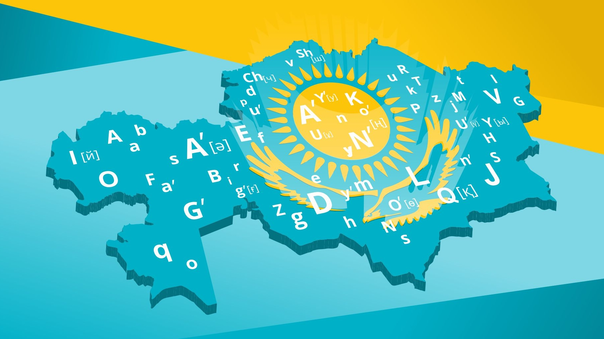

History of Kazakh language

The Kazakh language belongs to the Turkic language family, which is part of the larger Altaic language group. This linguistic connection ties Kazakh to other Turkic languages spoken in Central Asia and beyond.
The Kazakh language exhibits dialectal diversity due to the geographical spread of Kazakh communities. Different regions may have variations in pronunciation, vocabulary, and grammar.
The Kazakh language and its rich oral heritage were recognized by UNESCO in 2001 as a Masterpiece of the Oral and Intangible Heritage of Humanity. This acknowledgment highlights the cultural significance of the language.